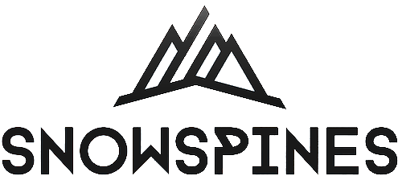
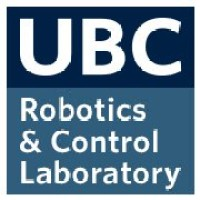
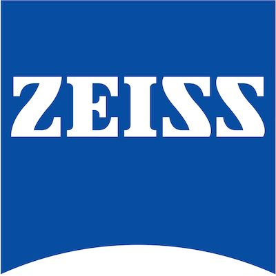

ABOUT ME
PhD Candidate in Medical Robotics & Teleoperation
I am a PhD candidate in Electrical and Computer Engineering at the University of British Columbia, Vancouver, Canada, studying medical robotics and imaging with Prof. Tim Salcudean. My research focuses on novel approaches to teleoperation and human computer interaction in these fields, including implementing haptic feedback on surgical robots by developing novel optical and magnetic force sensing techniques and applying control theory. Further, I am developing an exciting new concept of "human teleoperation" (see here). On the side, I am researching hyperspectral fluorescence spectroscopy-guided neurosurgery with researchers at the University Hospital of Münster, Germany (see here).
I was recently featured for my tele-ultrasound research and receiving a Mitacs Innovation Award by: CBC News, CBC Radio 1 (starts around 30:45), Mitacs, Healthing.ca, Techouver, Canadian Healthcare Technology, CanadianSME, T-Net BC, as well as UBC Research and UBC Applied Science.
David Black

Also for being awarded a VCH-RI grant by Vancouver Coastal Health, for my Vanier Scholarship by UBC Graduate Studies, and UBC Engineering Physics, for winning a 3-minute thesis competition by the UBC ECE Department, for a Hamlyn Symposium Best Paper Award by the UBC Institute for Computing, Information, and Cognitive Science, and finally for awards related to a research project by UBC Engineering Physics.
Additionally, I am an avid skier, paragliding pilot, speed flyer, climber, road cyclist, and trail runner (View some highlights - all photos on this site are of or by me). I am also fluent (written and spoken) in English and German. Below is a list of my experiences, education, etc.
CBC News Interview about my PhD Research
CURRICULUM VITAE
Education
 May 2021 - Present
May 2021 - Present
University of British Columbia, Vancouver, Canada
PhD in Electrical and Computer Engineering (Focus on Medical Robotics and Teleoperation)
See courses
 December 2023
December 2023
Hamlyn Centre for Robotic Surgery, Imperial College, London
Hamlyn Winter School on Surgical Imaging and Vision
Won runner-up best project award
September 2016 - May 2021
University of British Columbia, Vancouver, Canada
Bachelor of Applied Science in Engineering Physics
See courses
Work Experience
 May - August 2024
May - August 2024
Robotics Engineer Intern at ImFusion GmbH, Munich, Germany
April 2021 - April 2022
Co-Founder & Lead Engineer of Snowspines Inc.
May - September 2020
Robotics Engineer Co-op at A&K Robotics
May - December 2019
UBC Robotics and Control Lab Research Student
January 2018-April 2019
Carl Zeiss Meditec AG Advanced Development Internship
September 2011 - April 2017
BC Soccer Referee
April - September 2016
Mountain Equipment Co-op Vancouver Floor Staff
Project Experience
July 2020 - Present
Mixed Reality Telemedicine (UBC Robotics & Control Lab)
September 2022 - Present
Low Profile Magnetic Force/Torque Sensing (UBC Robotics & Control Lab)
October 2019 - Present
Fluorescence Guided Neurosurgery Research (University Hospital of Münster, Germany; Carl Zeiss Meditec AG, Oberkochen, Germany; Macquarie University, Sydney, Australia)
December 2023 - Present
SLAM for Robotic Endonasal Surgery (UBC; Moorsfield Eye Hospital, London, UK; DLR, Munich)
September 2023 - Present
Mixed Reality-Guided Trans-oral Robotic Surgery (University of British Columbia; Vancouver General Hospital)
September 2021 - December 2021
Optimal Joint Scheduling of eMBB and URLLC Traffic on the 5G NR (UBC EECE 565 Course)
September 2019 - April 2021
Robotic Anthropomorphic PET Phantom (BC Cancer Research Centre)
May - December 2019
Force/Torque Sensing for Robotic Surgery (UBC Robotics & Control Lab)
August 2019
Custom Thermal Cycler Design for CellenONE single-cell isolator and dispenser (BC Cancer Research Centre)
July - August 2018
Autonomous Mobile Robot Competition (UBC Engineering Physics Robot Course)
September 2016 - December 2017
UBC Solar Car Vehicle Dynamics Team Lead
Patents
- D. Black, S. Salcudean. "Differential Magnetic Multi-axis Force Sensing," US Patent Office Provisional Patent. May 2023.
- D. Black, Y. Oloumi, A.H. Hadi Hosseinabadi, S. Salcudean. "System and Method for Low-Cost Remote Guidance of Procedures," US Patent Office Patent Application. March 2023.
- D. Black, Y. Oloumi, A.H. Hadi Hosseinabadi, S. Salcudean. "System and Apparatus for Remote Interaction with an Object," US Patent Office Patent Application. July 2021.
- D. Black, J. Voldeng, A. Fraser. "Electronic Stride Assist Mechanism for Ski Touring," US Patent Office Provisional Patent. July 2021.
Publications
-
E. Suero Molina, D. Black, A. Xie, J. Gill, A. Di leva, W. Stummer, . "Machine and Deep Learning in Hyperspectral Fluorescence-Guided Brain Tumor Surgery," book chapter in Computational Neurosurgery, Nov. 2024.
-
D. Black, A. Xie, J. Gill, B. Liquet, A. Di leva, W. Stummer, E. Suero Molina. "Deep Learning-Based Hyperspectral Image Correction and Unmixing for Brain Tumor Surgery," in iScience, Oct. 2024.
-
D. Black, S. Salcudean. "Stability and Transparency in Mixed Reality Bilateral Teleoperation" submitted to IEEE Transactions on Robotics, October, 2024.
-
R. Yeung, D. Black, P. Chen, V. Lessoway, J. Reid, S. Rangel-Suarez, S. Chang, S. Salcudean. "Mixed Reality Tele-ultrasound over 750 km: a Clinical Study," submitted to the IEEE Transactions on Biomedical Engineering, Oct. 2024.
-
R. Vassallo, T.A. Aleef, V. Desaigoudar, Q. Zeng, D. Black, B. Wodlinger, M. Mannas, P.C. Black, S. Salcudean. "Simplifying Prostate Elastography Using Micro-Ultrasound and Transfer Function Imaging," in the MICCAI 2024 ASMUS Workshop.
-
D. Black, B. Liquet, S. Kaneko, A. Di leva, W. Stummer, E. Suero Molina. "A Spectral Library and Method for Sparse Unmixing of Hyperspectral Images in Fluorescence Guided Resection of Brain Tumors," in Biomedical Optics Express, accepted June 2024.
-
D. Black, S. Salcudean. "Robust Object Pose Tracking for Augmented Reality Guidance and Teleoperation," in IEEE Transactions on Instrumentation and Measurement, May 2024.
-
D. Black, N. Rangga, M. Nogami, A.H. Hadi Hosseinabadi, S. Salcudean. "Low Profile 6-Axis Differential Magnetic Force/Torque Sensing," in IEEE Transactions on Medical Robotics and Bionics, Accepted April 2024.
-
D. Black, M. Nogami, S. Salcudean. "Mixed Reality Human Teleoperation with Device-Agnostic Remote Ultrasound: Communication and HCI," in Computers and Graphics, January, 2024
-
D. Black, D. Andjelic, S.E Salcudean. "Evaluation of Communication and Human Response Latency for (Human) Teleoperation," in IEEE Transactions on Medical Robotics. January, 2024.
-
A.H. Hadi Hosseinabadi, D. Black, S. Salcudean. "Multi-Axis Force Sensing in Laparoscopic Surgery," in IEEE Robotics and Automation Letters, January 2024.
-
E. Suero Molina, D. Black, A. Walke, G. Azemi, F. D'Alessandro, S. König, W. Stummer. "Unraveling the blue shift in porphyrin fluorescence in glioma: The 620 nm peak and its potential significance in tumor biology," in Frontiers in Neuroscience, Vol 17. October, 2023.
-
D. Black, D. Byrne, A. Walke, S. Liu, A. Di leva, S. Kaneko, W. Stummer, S. Salcudean, E. Suero Molina. "Towards Machine Learning-based Quantitative Hyperspectral Image Guidance for Brain Tumor Resection," in Nature Communications Medicine, Accepted April 2024.
-
D. Black, A.H. Hadi Hosseinabadi, M. Nogami, N. Rangga, S. Salcudean. "Towards Differential Magnetic Force Sensing for Ultrasound Teleoperation," in IEEE World Haptics Conference, July 10-13, 2023, Delft, NL.
-
D. Black, S. Salcudean. "Mixed Reality Human Teleoperation," in IEEE VR, March 25-29, 2023, Shanghai, China. Workshop Presentation & Paper.
-
A. Walke, D. Black, W. Stummer, S. Kaiser, P. Valdes, E. Suero Molina. "Hyperspectral imaging in malignant glioma: Challenges in, and recommendations for, ex vivo biopsy measurements," in Nature Scientific Reports Vol 13. March, 2023.
-
D. Black, H. Moradi, S.E Salcudean. "Human-as-a-Robot Performance in Augmented Reality Teleultrasound," in International Journal of Computer Assisted Radiology and Surgery. Accepted March, 2023.
-
S.E. Salcudean, H. Moradi, D. Black, N. Navab. "Robot-assisted Medical Imaging: a Review," in Proceedings of the IEEE. Vol 110, No 7. April, 2022.
-
E. Suero Molina, D. Black, S. Kaneko, M. Muether, W. Stummer. "Double dose of 5-ALA and its effect on PPIX expression in Low-Grade Glioma," in Journal of Neurosurgery. February, 2022.
-
W. Stummer, S. Kaneko, D. Black, E. Suero Molina. "5-ALA induced porphyrin contents in various brain tumors - Implications regarding imaging device design and their validation," in Neurosurgery. Vol 89, No 6, pp 1132-1140. October, 2021.
-
D. Black, S. Kaneko, A. Walke, S. Koenig, W. Stummer, E. Suero Molina. "Characterization of Autofluorescence and Quantitative Protoporphyrin IX Biomarkers for Optical Spectroscopy-Guided Glioma Surgery," in Nature: Scientific Reports. Vol. 11, Oct. 8, 2021.
-
D. Black, Y. Oloumi, A.H. Hadi Hosseinabadi, S. Salcudean. "Human Teleoperation - a Haptically-Enabled Mixed Reality System for Teleultrasound," Human Computer Interaction. June, 2023 (submitted July 2021).
-
D. Black, Y. Oloumi, J. Wong, R. Fedrigo, C. Uribe, D. Kadrmas, A. Rahmim, I. Klyuzhin. "Design of an Anthropomorphic Respiratory Phantom for PET Imaging," Medical Physics. Vol 48, No 8, pp. 4205-4217. 2021.
-
E. Suero-Molina, S. Kaneko, P. Sporns, S. Schipmann, D. Black, W. Stummer. "Fluorescence Real-Time Kinetics of Protoporphyrin IX after 5-ALA Administration in Low-Grade Glioma," in Journal of Neurosurgery. Oct. 2020.
-
A. H. Hadi Hosseinabadi, D. Black and S. Salcudean, "Ultra Low-Noise FPGA-Based 6-Axis Optical Force-Torque Sensor: Hardware and Software," in IEEE Transactions on Industrial Electronics. Vol 68, No 10, pp. 10207 - 10217. 2020. doi: 10.1109/TIE.2020.3021648.
-
D. Black, A. H. H. Hosseinabadi and S. E. Salcudean, "6-DOF Force Sensing for the Master Tool Manipulator of the da Vinci Surgical System," in IEEE Robotics and Automation Letters, vol. 5, no. 2, pp. 2264-2271, April 2020, doi: 10.1109/LRA.2020.2970944.
-
S. Kaneko, E. Suero Molina, C. Ewelt, N. Warneke, W. Stummer. "Fluorescence-Based Measurement of Real-Time Kinetics of Protoporphyrin IX After 5-Aminolevulinic Acid Administration in Human In Situ Malignant Gliomas," in Neurosurgery. 2019;85(4):E739-E746.
Conferences
-
A.H.H. Hosseinabadi, D. Black, S. Salcudean. "Multi-Axis Force Sensing in Laparoscopic Surgery," IEEE RAS/EMBS International Conference on Biomedical Robotics and Biomechatronics (BioRob 2024). Heidelberg, Germany, Sept 1, 2024. Podium Presentation.
-
D. Black, D. Byrnes, A. Walke, S. Liu, A. Di Ieva, W. Stummer, S. Salcudean, E. Suero Molina. "Towards machine learning-based quantitative hyperspectral image guidance for brain tumor resection," in German Neurosurgery Society (DGNC) Annual Conference. Göttingen, Germany. June 10, 2024. Podium presentation.
-
D. Black, J. Gill, A. Xie, S. Kaneko, A. Di Ieva, W. Stummer, E. Suero Molina. "Deep learning-based normalization and unmixing of hyperspectral images for brain tumor surgery," in German Neurosurgery Society (DGNC) Annual Conference. Göttingen, Germany. June 10, 2024. Poster.
-
D. Black, S. Kaneko, W. Stummer, E. Suero Molina. "A spectral library and method for sparse unmixing of hyperspectral images in fluorescence guided resection of brain tumors" in German Neurosurgery Society (DGNC) Annual Conference. Göttingen, Germany. June 10, 2024. Poster.
-
D. Black, D. Byrnes, A. Walke, S. Liu, A. Di Ieva, W. Stummer, S. Salcudean, E. Suero Molina. "Machine Learning-based Spectroscopic Tissue Differentiation in Fluorescence-Guided Neurosurgery," in Society of Neuro-Oncology (SNO) Annual Conference 2023, Vancouver, Canada. Poster.
-
D. Black, S. Salcudean. "A Mixed Reality System for Human Teleoperation in Tele-Ultrasound," in the Hamlyn Symposium for Medical Robotics, June 26-29, 2022, London, UK. Podium Presentation.
- Received Best Paper Award
-
D. Black, S. Kaneko, A. Walke, S. Koenig, W. Stummer, E. Suero Molina. "Characterisation of autofluorescence and quantitative protoporphyrin IX biomarkers for optical spectroscopy-guided glioma surgery," in the German Neurosurgery Society (DGNC) Annual Conference. Köln, Germany. May 29-June 1, 2022. Abstract Presentation.
-
D. Black, Y. Oloumi, J. Wong, R. Fedrigo, C. Uribe, D. Kadrmas, A. Rahmim, I. Klyuzhin. "Design and Manufacture of Anatomically Realistic, Actuated, Elastic Lung Inserts for PET/CT Phantom Studies with Respiratory Motion," in the American Association of Physicists in Medicine / Canadian Organization of Medical Physicists joint conference 2020. AAPM e-Poster library Poster Number: BReP-SNAP-I-15.
- Accepted as Blue Ribbon ePoster (received very high reviewer scores but we could not give a presentation due to COVID-19)
- See abstract here
- See on conference website
-
E. Suero Molina, S. Kaneko, P. B. Sporns, S. Schipmann-Miletic, D. Black, W. Stummer. "Fluorescence real-time kinetics of protoporphyrin-IX after 5-ALA administration in low grade glioma," in the American Association of Neurosurgeons Conference. 2020. Presentation
-
E. Suero Molina, S. Kaneko, P. B. Sporns, S. Schipmann-Miletic, D. Black, W. Stummer. "Fluorescence real-time kinetics of protoporphyrin-IX after 5-ALA administration and factors predicting fluorescence in low-grade glioma," in the Joint Conference of the German Neurosurgery Society (DGNC) and Japanese Neurosurgery Society. 2020.
-
D. Black, A. H. H. Hosseinabadi and S. E. Salcudean, "6-DOF Force Sensing for the Master Tool Manipulator of the da Vinci Surgical System," in IEEE International Conference on Robotics and Automation, June 2020.
Awards
-
Mitacs Innovation Awards - Oustanding Innovation
-
Vanier Canada Graduate Scholarship
- November 2022
- Ranked third in the nation. Highest award for graduate students in Canada
-
Faculty of Applied Science Graduate Award
-
President's Academic Excellence PhD Award
- September 2021, May 2022, September 2022, 2023, 2024
-
Best Paper Award, Hamlyn Symposium for Medical Robotics, Imperial College London, UK
-
MITACS Accelerate + Rogers Communications Intern
- June 2022 - 2024+
- I wrote much of the grant application and gave presentations to receive this funding and start a collaboration with Rogers.
-
NSERC Canada Graduate Studies - Doctoral (CGS-D) Award
- May 2022 - 2025
- Highest level of the NSERC Post Graduate Studies (PGS-D) awards
-
UBC Four Year Fellowship (4YF) for PhD Students
-
Faculty of Applied Science Graduate Award
- November 2021
- For academic achievement
-
J.K. Zee Fellowship in Electrical and Computer Engineering
-
Graduate Support Initiative Award
-
Biomedical Imaging and AI (BMIAI) Research Showcase 3-Minute Thesis Competition Winner
-
NSERC Alexander Graham Bell Canada Graduate Studies - Master's Scholarship
- May 2021 - 2022
- Awarded for exceptional academic and research achievement, as well as leadership potential for student in a Master's program or starting the first year of their PhD (as is my case)
-
Medical Device Design Centre Innovation Award
- May 2021
- Awarded after presenting my Mixed Reality Teleoperation project to a panel of judges.
- "Honours the student or student team who distinguish themselves as leaders in innovation through the originality of their idea, the alignment of their solution with existing needs, the attention to detail and progress in the development of the technology, and the consideration of economic and social impacts."
-
Dorothy and Arthur Holt Scholarship
- 2021
- Awarded to around 9 students in any faculty and/or degree program at UBC for academic excellence
-
Trek Excellence Scholarship for Continuing Students
- 2020
- Awarded to students in the top 5% of their faculty and year.
-
UBC Engineering Design and Innovation Day Faculty Award
- 2020
- Awarded by faculty choice for the most exceptional and innovative Engineering Physics project showcased at the UBC Applied Science Design and Innovation Day, 2020. Awarded for my robotic PET phantom project.
-
Edith Grace Buchan Scholarship
- 2019
- Scholarship for excellence in engineering, as nominated by a faculty member in the Faculty of Applied Science.
-
UBC Science Coop International Work Term Award
- 2018
- Awarded for outstanding international work term placement in my first term of coop.
-
Trek Excellence Scholarship for Continuing Studies
- 2017
- Awarded to students in the top 5% of their faculty and year.
Awarded Grant Proposals
I have written or helped write several grant proposals, which have all been funded
- Rogers-UBC 5G Partnership - Human Teleoperation project - 2021 (funded for 3+ years)
- MITACS Accelerate Grant - Human Teleoperation project - 2022 (funded for 1+ year)
- Vancouver Coastal Health Research Institute - Innovation and Translational Research Award - Human Teleoperation Project - 2023 (funded for 1+ year)
- NSERC Research Tools and Instruments Grant - Human Teleoperation Project - 2023
Supervision, Mentorship, and Teaching
- Taught a Topics in Biomedical Engineering class (ELEC 271 at UBC) (March 2024)
- Supervising a group of four masters and PhD students for an extensive course project in shared control and AR guidance for robot-assisted spinal needle insertion (4 months - Winter 2024)
- Supervising a group of six fourth year undergraduate students for an extensive course project in SLAM for robotic endoscopy (4 months - Winter 2024)
- Mentoring a third year undergraduate computer science co-op student working on the Human Teleoperation communication system (8 months - Jan-Aug 2024)
- Mentoring a third year undergraduate computer engineering co-op student working on a low-cost Human Teleoperation system (4 months - Winter 2024)
- Mentoring a fifth year undergraduate integrated engineering WorkLearn student for developing human pose and 3D-mesh approximation (8 months - Winter 2023/24)
- Supervised a group of four fourth year undergraduate students in Engineering Physics for their capstone project in deep learning for fluorescence neurosurgery (Sept 2022 - Jan 2024)
- Mentored a fourth year undergraduate integrated engineering WorkLearn student for designing a novel force sensor (8 months - Winter 2022/23)
- Mentored a fourth year undergraduate computer engineering co-op student for a machine learning project (4 months - Fall 2022)
- Mentored a third year undergraduate mechanical engineering co-op student for designing a novel force sensor (4 months - Summer 2022)
- Mentored a masters student from the French air force and Ecole Polytechnique in France for integrating force sensing on an ultrasound probe (3 months - Spring 2022)
- Taught a ROS tutorial class for my supervisor's graduate-level robotics course (March 2022, January 2023)
- Supervised a group of six fourth year undergraduate / 1st year masters students for an extensive course project in haptics (4 months - Winter 2022)
- Supervised a group of four fourth year undergraduate students in Engineering Physics for their capstone project in mechanical design (5 months - Fall 2021)
Reviews
I have provided reviews for:
- May 2021: IEEE International Conference on Advanced Robotics and Mechatronics - visual servoing and haptics in robotic laparoscopy
- December 2021: Medical Physics - CT phantom
- March 2022: IEEE Transactions on Robotics - haptics
- October 2022: IEEE Robotics and Automation Letters - force sensing in medical robotics
- November 2022: IPCAI 2023 - surgical robotics
- January 2023: IEEE Transactions on Instrumentation and Measurement - surgical robotics
- February 2023: IEEE World Haptics Conference - haptic cues
- February 2023: IEEE World Haptics Conference - bimanual teleoperation
- February 2023: IEEE World Haptics Conference - magnetic haptic devices
- May 2023: IEEE Transactions on Instrumentation and Measurement - fluorescence spectroscopy
- September 2023: IEEE Transactions on Medical Robotics and Bionics - image guided surgical robotics
- January 2024: Ultrasound in Medicine and Biology - AI in ultrasound
- February 2024: International Journal of Computer Assisted Radiology and Surgery - robotic palpation
- April 2024: IEEE IROS - manipulator for robotic surgery
- May 2024: PRESENCE Virtual and Augmented Reality - robot programming through AR
- May 2024: IEEE Transactions on Medical Robotics and Bionics - autonomous robotic surgery with ultrasound
- July 2024: PRESENCE - robot control with mixed reality
- August 2024: IEEE Transactions on Instrumentation & Measurement - actuated cardiac phantom for CT
- September 2024: Sensors Review - force sensing in robot-assisted surgery
- October 2024: IEEE ICRA - mixed reality-based robot control
- December 2024: European Respiratory Review - teleultrasound
Misc. Presentations
-
University of Calgary - Neonatology Grand Rounds
-
University Hospital of Muenster - Neurosurgery Grand Rounds
-
Presented and demoed my system to many local and visiting professors, including:
- External: Alison Noble (Oxford), Russel Taylor (Johns Hopkins), Mikhail Shapiro (Caltech), Nicolas Padoy (Strasbourg), Ivar Mendez (Saskatchewan), Derya Tilki (Martini-Klinik), Guosong Hong (Stanford), Keyvan Hashtrudi-Zaad, Parvin Mousavi, John Rudan, Teresa and James Purzner (Queens), Eric Suero Molina (Muenster), Alexandra Moringen (Greifswald)
- UBC: Andre Marziali, Ali Bashashati, Helge Rhodin, Rob Rohling, Edmond Cretu, Shahriar Mirabbasi, Purang Abolmaesumi, Silvia Chang, Serge Makarenko, Peter Black, Miles Mannas, and many others
- 2021-2024
-
Presented and demoed my system to several groups, including: Rogers executives, Philips Ultrasound product managers, Microsoft, Siemens, BC government ministers Brenda Bailey and Lisa Beare, Coastal First Nations, First Nations Health Authority, physicians from Bella Bella and Haida Gwaii, etc.
-
Presented at ImFusion GmbH, Munich, Germany and toured their labs
-
Presented at Rogers 5G Research Symposium
-
Presented to Coastal First Nations Leadership
- Prompted collaboration
- June 2022
-
Presented at Biomedical Imaging and AI (BMIAI) Research Showcase
- Won 3-Minute Thesis Competition
- October 2021
-
Presented to Prof. Emad Boctor's MUSiiC research group at Johns Hopkins
-
Presented to Prof. Nassir Navab's CAMP research group at TU Munich and Johns Hopkins
-
Presented at BC Medical Device Design Centre Competition
- Won Innovation Award for my work
- April 2021
Other
Avid backcountry skier, paragliding pilot, rock climber, mountaineer (View some highlights)
Fluent in German and English
Play cello
Computer Skills Confidence:
MATLAB, Python, C#, C++, LaTeX, Linux, ROS, ROSBridge, da Vinci Research Kit, Unity, Microsoft Mixed Reality Toolkit, WebSocket, WebRTC, CAD (SolidWorks, Fusion 360, OnShape), FEA (ANSYS, Solidworks), Microcontrollers (Arduino, Raspberry Pi, STM32), LTSpice
Computer Vision, Reinforcement Learning, Machine Learning, Android Studio, C, PCB Design (Altium, KiCAD), Communication (Networking, SPI, I2C, UART, BLE, TCP/IP, 5G)
Julia, Assembly Language, VHDL
Other Skills:
- Mechanical Design
- Robotics (mechanical design, kinematics, dynamics, controls)
- Control systems, teleoperation
- Physics, mathematical modeling, optimization
- Research, data analysis, report and paper writing, conference posters, abstracts, and presentations
- Project Management
- Prototyping using 3D printers, laser & water-jet cutters, lathes, mills, saws, and drills
- Medical Imaging, nuclear medicine, biophotonics, optics (Physics and Engineering)
- Stepper motors, servos, motor controllers, rotary encoders, IR sensing, analog signals processing, etc.
- Analog and digital circuit design, prototyping, and debugging